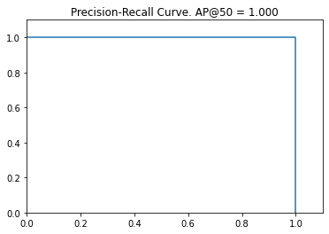
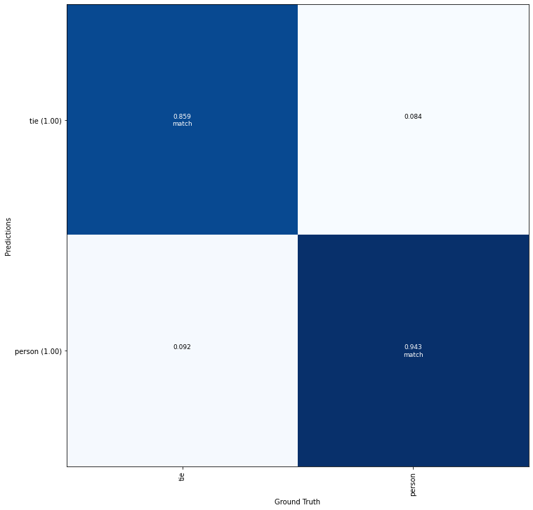
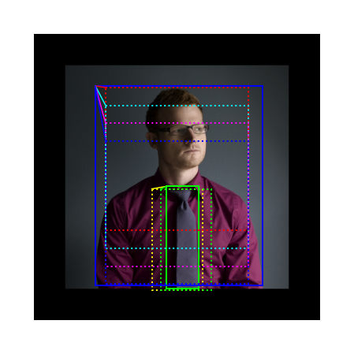
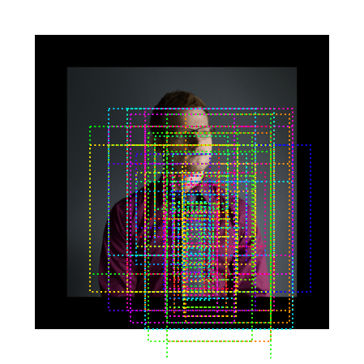
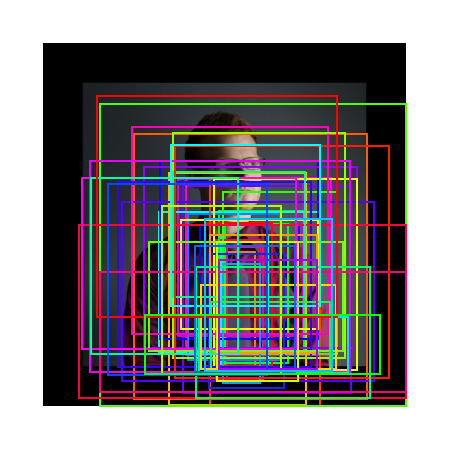
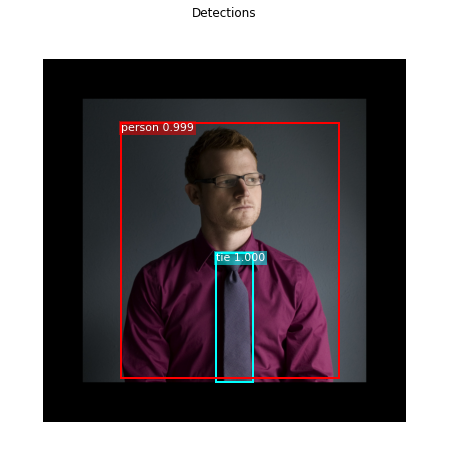
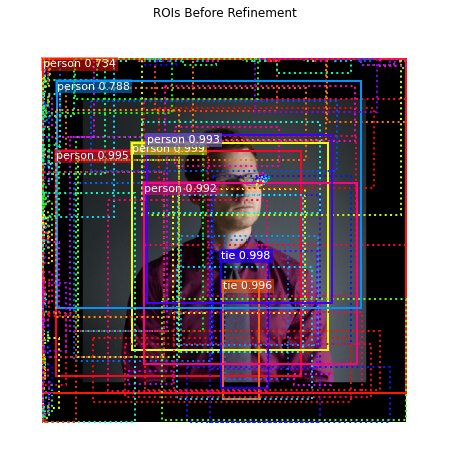
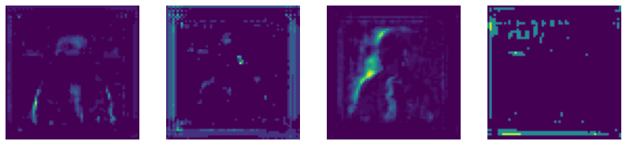
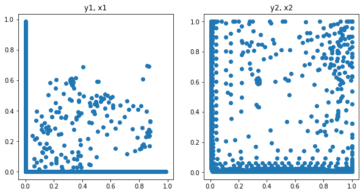

Python 3.6.6 |Anaconda, Inc.| (default, Jun 28 2018, 11:27:44) [MSC v.1900 64 bit (AMD64)]
Type "copyright", "credits" or "license" for more information.
IPython 7.16.1 -- An enhanced Interactive Python.
In [1]: runfile('D:/YJ/MyRepo/Mask_RCNN-tf2/coco_inspect_model.py', wdir='D:/YJ/MyRepo/Mask_RCNN-tf2')
2020-12-10 02:14:49.166676: I tensorflow/stream_executor/platform/default/dso_loader.cc:44] Successfully opened dynamic library cudart64_101.dll
Configurations:
BACKBONE resnet101
BACKBONE_STRIDES [4, 8, 16, 32, 64]
BATCH_SIZE 1
BBOX_STD_DEV [0.1 0.1 0.2 0.2]
COMPUTE_BACKBONE_SHAPE None
DETECTION_MAX_INSTANCES 100
DETECTION_MIN_CONFIDENCE 0.7
DETECTION_NMS_THRESHOLD 0.3
FPN_CLASSIF_FC_LAYERS_SIZE 1024
GPU_COUNT 1
GRADIENT_CLIP_NORM 5.0
IMAGES_PER_GPU 1
IMAGE_CHANNEL_COUNT 3
IMAGE_MAX_DIM 1024
IMAGE_META_SIZE 93
IMAGE_MIN_DIM 800
IMAGE_MIN_SCALE 0
IMAGE_RESIZE_MODE square
IMAGE_SHAPE [1024 1024 3]
LEARNING_MOMENTUM 0.9
LEARNING_RATE 0.001
LOSS_WEIGHTS {'rpn_class_loss': 1.0, 'rpn_bbox_loss': 1.0, 'mrcnn_class_loss': 1.0, 'mrcnn_bbox_loss': 1.0, 'mrcnn_mask_loss': 1.0}
MASK_POOL_SIZE 14
MASK_SHAPE [28, 28]
MAX_GT_INSTANCES 100
MEAN_PIXEL [123.7 116.8 103.9]
MINI_MASK_SHAPE (56, 56)
NAME coco
NUM_CLASSES 81
POOL_SIZE 7
POST_NMS_ROIS_INFERENCE 1000
POST_NMS_ROIS_TRAINING 2000
PRE_NMS_LIMIT 6000
ROI_POSITIVE_RATIO 0.33
RPN_ANCHOR_RATIOS [0.5, 1, 2]
RPN_ANCHOR_SCALES (32, 64, 128, 256, 512)
RPN_ANCHOR_STRIDE 1
RPN_BBOX_STD_DEV [0.1 0.1 0.2 0.2]
RPN_NMS_THRESHOLD 0.7
RPN_TRAIN_ANCHORS_PER_IMAGE 256
STEPS_PER_EPOCH 1000
TOP_DOWN_PYRAMID_SIZE 256
TRAIN_BN False
TRAIN_ROIS_PER_IMAGE 200
USE_MINI_MASK True
USE_RPN_ROIS True
VALIDATION_STEPS 50
WEIGHT_DECAY 0.0001
loading annotations into memory...
Done (t=0.71s)
creating index...
index created!
Images: 4952
Classes: ['BG', 'person', 'bicycle', 'car', 'motorcycle', 'airplane', 'bus', 'train', 'truck', 'boat', 'traffic light', 'fire hydrant', 'stop sign', 'parking meter', 'bench', 'bird', 'cat', 'dog', 'horse', 'sheep', 'cow', 'elephant', 'bear', 'zebra', 'giraffe', 'backpack', 'umbrella', 'handbag', 'tie', 'suitcase', 'frisbee', 'skis', 'snowboard', 'sports ball', 'kite', 'baseball bat', 'baseball glove', 'skateboard', 'surfboard', 'tennis racket', 'bottle', 'wine glass', 'cup', 'fork', 'knife', 'spoon', 'bowl', 'banana', 'apple', 'sandwich', 'orange', 'broccoli', 'carrot', 'hot dog', 'pizza', 'donut', 'cake', 'chair', 'couch', 'potted plant', 'bed', 'dining table', 'toilet', 'tv', 'laptop', 'mouse', 'remote', 'keyboard', 'cell phone', 'microwave', 'oven', 'toaster', 'sink', 'refrigerator', 'book', 'clock', 'vase', 'scissors', 'teddy bear', 'hair drier', 'toothbrush']
WARNING:tensorflow:From D:\Anaconda3\envs\mask_rcnn\lib\site-packages\tensorflow_core\python\ops\resource_variable_ops.py:1635: calling BaseResourceVariable.__init__ (from tensorflow.python.ops.resource_variable_ops) with constraint is deprecated and will be removed in a future version.
Instructions for updating:
If using Keras pass *_constraint arguments to layers.
2020-12-10 02:14:49.166676: I tensorflow/stream_executor/platform/default/dso_loader.cc:44] Successfully opened dynamic library cudart64_101.dll
2020-12-10 02:14:59.640483: I tensorflow/stream_executor/platform/default/dso_loader.cc:44] Successfully opened dynamic library nvcuda.dll
2020-12-10 02:14:59.658317: I tensorflow/core/common_runtime/gpu/gpu_device.cc:1555] Found device 0 with properties:
pciBusID: 0000:01:00.0 name: GeForce GTX 1060 computeCapability: 6.1
coreClock: 1.6705GHz coreCount: 10 deviceMemorySize: 6.00GiB deviceMemoryBandwidth: 178.99GiB/s
2020-12-10 02:14:59.658362: I tensorflow/stream_executor/platform/default/dso_loader.cc:44] Successfully opened dynamic library cudart64_101.dll
2020-12-10 02:14:59.664416: I tensorflow/stream_executor/platform/default/dso_loader.cc:44] Successfully opened dynamic library cublas64_10.dll
2020-12-10 02:14:59.667780: I tensorflow/stream_executor/platform/default/dso_loader.cc:44] Successfully opened dynamic library cufft64_10.dll
2020-12-10 02:14:59.669265: I tensorflow/stream_executor/platform/default/dso_loader.cc:44] Successfully opened dynamic library curand64_10.dll
2020-12-10 02:14:59.674048: I tensorflow/stream_executor/platform/default/dso_loader.cc:44] Successfully opened dynamic library cusolver64_10.dll
2020-12-10 02:14:59.677498: I tensorflow/stream_executor/platform/default/dso_loader.cc:44] Successfully opened dynamic library cusparse64_10.dll
2020-12-10 02:14:59.691750: I tensorflow/stream_executor/platform/default/dso_loader.cc:44] Successfully opened dynamic library cudnn64_7.dll
2020-12-10 02:14:59.691843: I tensorflow/core/common_runtime/gpu/gpu_device.cc:1697] Adding visible gpu devices: 0
Loading weights mask_rcnn_coco.h5
Using TensorFlow backend.
2020-12-10 02:14:49.166676: I tensorflow/stream_executor/platform/default/dso_loader.cc:44] Successfully opened dynamic library cudart64_101.dll
2020-12-10 02:14:59.640483: I tensorflow/stream_executor/platform/default/dso_loader.cc:44] Successfully opened dynamic library nvcuda.dll
2020-12-10 02:14:59.658317: I tensorflow/core/common_runtime/gpu/gpu_device.cc:1555] Found device 0 with properties:
pciBusID: 0000:01:00.0 name: GeForce GTX 1060 computeCapability: 6.1
coreClock: 1.6705GHz coreCount: 10 deviceMemorySize: 6.00GiB deviceMemoryBandwidth: 178.99GiB/s
2020-12-10 02:14:59.658362: I tensorflow/stream_executor/platform/default/dso_loader.cc:44] Successfully opened dynamic library cudart64_101.dll
2020-12-10 02:14:59.664416: I tensorflow/stream_executor/platform/default/dso_loader.cc:44] Successfully opened dynamic library cublas64_10.dll
2020-12-10 02:14:59.667780: I tensorflow/stream_executor/platform/default/dso_loader.cc:44] Successfully opened dynamic library cufft64_10.dll
2020-12-10 02:14:59.669265: I tensorflow/stream_executor/platform/default/dso_loader.cc:44] Successfully opened dynamic library curand64_10.dll
2020-12-10 02:14:59.674048: I tensorflow/stream_executor/platform/default/dso_loader.cc:44] Successfully opened dynamic library cusolver64_10.dll
2020-12-10 02:14:59.677498: I tensorflow/stream_executor/platform/default/dso_loader.cc:44] Successfully opened dynamic library cusparse64_10.dll
2020-12-10 02:14:59.691750: I tensorflow/stream_executor/platform/default/dso_loader.cc:44] Successfully opened dynamic library cudnn64_7.dll
2020-12-10 02:14:59.691843: I tensorflow/core/common_runtime/gpu/gpu_device.cc:1697] Adding visible gpu devices: 0
2020-12-10 02:15:01.268047: I tensorflow/core/platform/cpu_feature_guard.cc:142] Your CPU supports instructions that this TensorFlow binary was not compiled to use: AVX2
2020-12-10 02:15:01.268670: I tensorflow/core/common_runtime/gpu/gpu_device.cc:1555] Found device 0 with properties:
pciBusID: 0000:01:00.0 name: GeForce GTX 1060 computeCapability: 6.1
coreClock: 1.6705GHz coreCount: 10 deviceMemorySize: 6.00GiB deviceMemoryBandwidth: 178.99GiB/s
2020-12-10 02:15:01.268705: I tensorflow/stream_executor/platform/default/dso_loader.cc:44] Successfully opened dynamic library cudart64_101.dll
2020-12-10 02:15:01.268722: I tensorflow/stream_executor/platform/default/dso_loader.cc:44] Successfully opened dynamic library cublas64_10.dll
2020-12-10 02:15:01.268735: I tensorflow/stream_executor/platform/default/dso_loader.cc:44] Successfully opened dynamic library cufft64_10.dll
2020-12-10 02:15:01.268747: I tensorflow/stream_executor/platform/default/dso_loader.cc:44] Successfully opened dynamic library curand64_10.dll
2020-12-10 02:15:01.268764: I tensorflow/stream_executor/platform/default/dso_loader.cc:44] Successfully opened dynamic library cusolver64_10.dll
2020-12-10 02:15:01.268787: I tensorflow/stream_executor/platform/default/dso_loader.cc:44] Successfully opened dynamic library cusparse64_10.dll
2020-12-10 02:15:01.268804: I tensorflow/stream_executor/platform/default/dso_loader.cc:44] Successfully opened dynamic library cudnn64_7.dll
2020-12-10 02:15:01.268877: I tensorflow/core/common_runtime/gpu/gpu_device.cc:1697] Adding visible gpu devices: 0
2020-12-10 02:15:01.813105: I tensorflow/core/common_runtime/gpu/gpu_device.cc:1096] Device interconnect StreamExecutor with strength 1 edge matrix:
2020-12-10 02:15:01.813137: I tensorflow/core/common_runtime/gpu/gpu_device.cc:1102] 0
2020-12-10 02:15:01.813146: I tensorflow/core/common_runtime/gpu/gpu_device.cc:1115] 0: N
2020-12-10 02:15:01.813364: I tensorflow/core/common_runtime/gpu/gpu_device.cc:1241] Created TensorFlow device (/job:localhost/replica:0/task:0/device:GPU:0 with 4842 MB memory) -> physical GPU (device: 0, name: GeForce GTX 1060, pci bus id: 0000:01:00.0, compute capability: 6.1)
image ID: coco.562243 (3094) http://cocodataset.org/#explore?id=562243
Processing 1 images
image shape: (1024, 1024, 3) min: 0.00000 max: 235.00000 uint8
molded_images shape: (1, 1024, 1024, 3) min: -123.70000 max: 111.30000 float64
image_metas shape: (1, 93) min: 0.00000 max: 1024.00000 int32
anchors shape: (1, 261888, 4) min: -0.35390 max: 1.29134 float32
gt_class_id shape: (2,) min: 1.00000 max: 28.00000 int32
gt_bbox shape: (2, 4) min: 186.00000 max: 912.00000 int32
gt_mask shape: (1024, 1024, 2) min: 0.00000 max: 1.00000 bool
mAP @ IoU=50: 0.513897107163338
target_rpn_match shape: (261888,) min: -1.00000 max: 1.00000 int32
target_rpn_bbox shape: (256, 4) min: -2.18215 max: 1.85547 float64
positive_anchors shape: (6, 4) min: 192.00000 max: 917.01934 float64
negative_anchors shape: (250, 4) min: -74.50967 max: 1109.01934 float64
neutral anchors shape: (261632, 4) min: -362.03867 max: 1322.03867 float64
refined_anchors shape: (6, 4) min: 186.00000 max: 912.00000 float32
rpn_class shape: (1, 261888, 2) min: 0.00000 max: 1.00000 float32
pre_nms_anchors shape: (1, 6000, 4) min: -0.35390 max: 1.29134 float32
refined_anchors shape: (1, 6000, 4) min: -3.07820 max: 4.49550 float32
refined_anchors_clipped shape: (1, 6000, 4) min: 0.00000 max: 1.00000 float32
post_nms_anchor_ix shape: (1000,) min: 0.00000 max: 3361.00000 int32
proposals shape: (1, 1000, 4) min: 0.00000 max: 1.00000 float32
All Anchors (261888) Recall: 0.000 Positive anchors: 0
Refined Anchors ( 6000) Recall: 0.000 Positive anchors: 0
Post NMS Anchors ( 50) Recall: 0.500 Positive anchors: 2
proposals shape: (1, 1000, 4) min: 0.00000 max: 1.00000 float32
probs shape: (1, 1000, 81) min: 0.00000 max: 1.00000 float32
deltas shape: (1, 1000, 81, 4) min: -3.94284 max: 3.73110 float32
masks shape: (1, 100, 28, 28, 81) min: 0.00000 max: 1.00000 float32
detections shape: (1, 100, 6) min: 0.00000 max: 28.00000 float32
2 detections: ['tie' 'person']
1000 Valid proposals out of 1000
40 Positive ROIs
[('BG', 960), ('person', 30), ('tie', 10)]
roi_bbox_specific shape: (1000, 4) min: -3.22111 max: 2.95605 float32
refined_proposals shape: (1000, 4) min: -18.00000 max: 1069.00000 int32
Keep 40 detections:
[ 0 1 2 4 6 8 10 14 15 16 17 18 19 20 22 23 25 28
32 33 35 42 43 44 52 54 55 65 71 75 81 83 86 92 98 118
124 134 220 328]
Remove boxes below 0.7 confidence. Keep 34:
[ 0 1 2 4 8 10 15 16 17 19 20 22 23 25 28 32 33 35
44 52 54 55 65 75 81 83 86 92 98 118 124 134 220 328]
person : [ 4 15 16 17 19 22 25 28 32 33 35 44 52 54 55 65 75 81
83 86 92 118 124 134 220 328] -> [22]
tie : [ 0 1 2 8 10 20 23 98] -> [8]
Kept after per-class NMS: 2
[ 8 22]










detections shape: (1, 100, 6) min: 0.00000 max: 28.00000 float32
masks shape: (1, 100, 28, 28, 81) min: 0.00000 max: 1.00000 float32
2 detections: ['tie' 'person']
det_mask_specific shape: (2, 28, 28) min: 0.00002 max: 0.99998 float32
det_masks shape: (2, 1024, 1024) min: 0.00000 max: 1.00000 bool

input_image shape: (1, 1024, 1024, 3) min: -123.70000 max: 111.30000 float32
res4w_out shape: (1, 64, 64, 1024) min: 0.00000 max: 53.35516 float32
rpn_bbox shape: (1, 261888, 4) min: -7.05716 max: 35.69560 float32
roi shape: (1, 1000, 4) min: 0.00000 max: 1.00000 float32




In [2]: